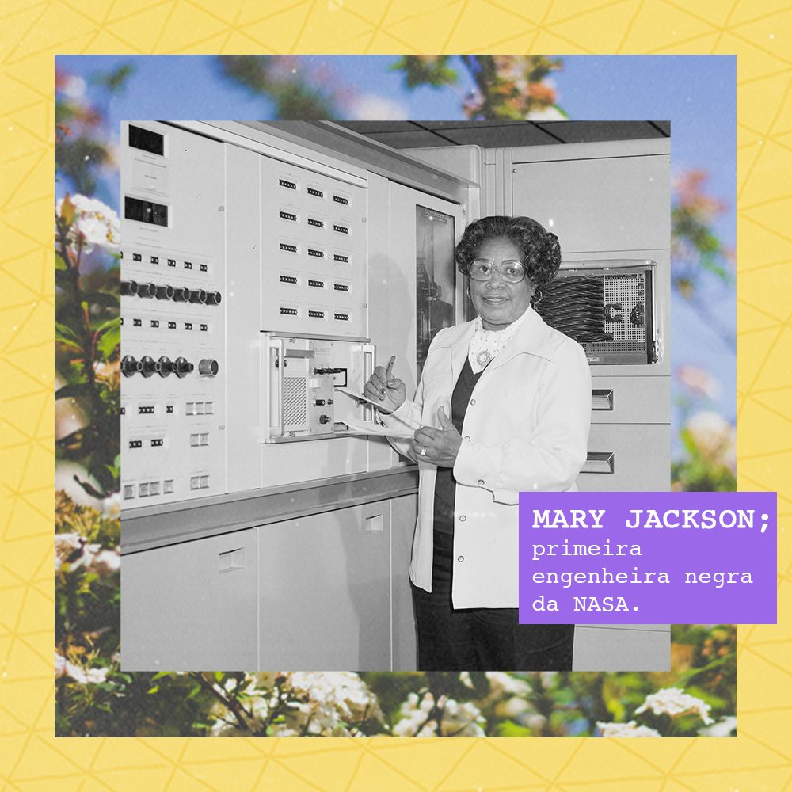
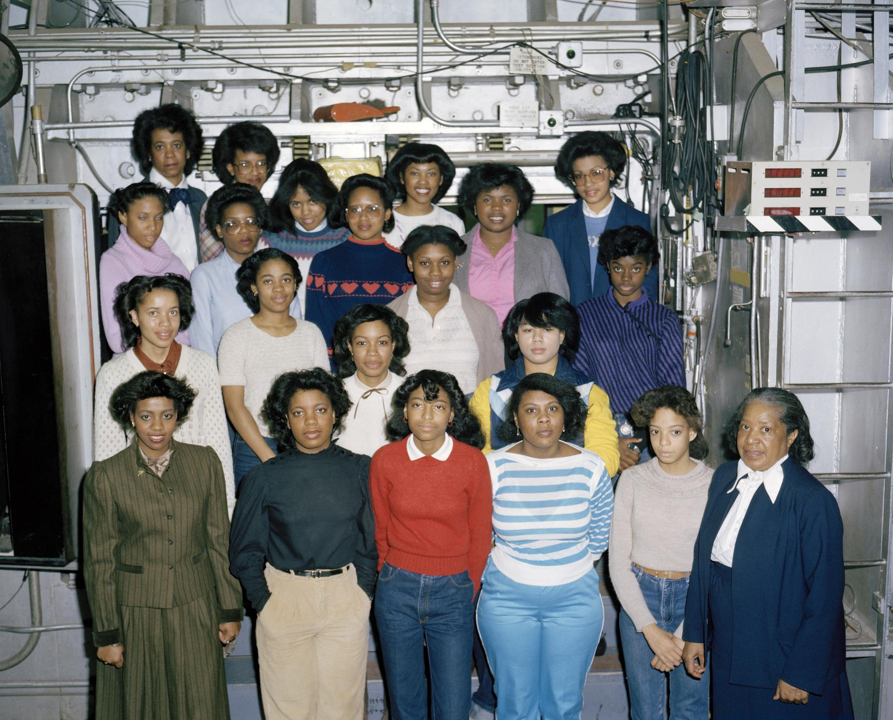
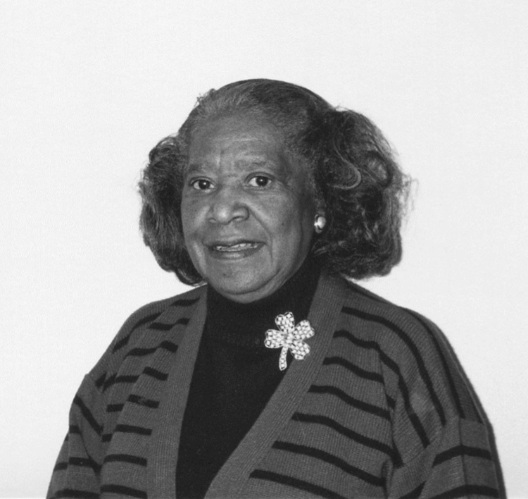

Foi uma matemática e a primeira engenheira aeroespacial do National Advisory Committee for Aeronautics (NACA), que se tornou a atual NASA.
Nascida em 9 de abril de 1921, em Hampton, Virgínia, filha de Frank Winston e Ella Scott Winston. Se formou com honrarias na escola para negros, George P. Phenix Training School. Obteve o bacharelado em Matemática e em Física pela Universidade Hampton, em 1942. Onde foi membro da Alpha Kappa Alpha (ΑΚΑ), a primeira irmandade estabelecida e incorporada por mulheres afro-estadunidenses universitárias que atuou nos direitos civis e pelo sufrágio das mulheres. Também foi líder das bandeirantes por vinte anos e era conhecida na comunidade negra por ter ajudado as crianças a construir uma miniatura de um túnel de vento.
Após a formatura, Mary Jackson ensinou matemática por um ano em uma escola afro-americana em Calvert County, Maryland. Naquela época, as escolas públicas ainda eram segregadas no sul. Ela também começou a dar aulas particulares para alunos do ensino médio e universitários, o que ela continuou a fazer ao longo de sua vida.
Em 1943, ela voltou para Hampton, onde se tornou contadora no National Catholic Community Center. Ela trabalhou como recepcionista e balconista no Departamento de Saúde do Instituto Hampton. Ela estava grávida durante esse tempo e finalmente voltou para casa para o nascimento de seu filho. Em 1951, ela se tornou escriturária no Escritório das Forças de Campo do Exército Chefe em Fort Monroe.
Em 1951, Jackson foi recrutada pelo National Advisory Committee for Aeronautics (NACA), que em 1958 foi sucedido pela National Aeronautics and Space Administration (NASA). Ela começou como pesquisadora matemática, no Langley Research Center em sua cidade natal, Hampton, Virginia. Ela trabalhou com Dorothy Vaughan na segregada West Area Computing Section
Em 1953, ela aceitou uma oferta para trabalhar para o engenheiro Kazimierz Czarnecki no túnel de pressão supersônica. O túnel de vento de 4 por 4 pés (1,2 por 1,2 m) e 60.000 cavalos (45.000 kW) foi usado para estudar as forças em um modelo gerando ventos com quase o dobro da velocidade do som. Czarnecki encorajou Jackson a se submeter a um treinamento para que ela pudesse ser promovida a engenheira. Ela precisava fazer cursos de graduação em matemática e física para se qualificar para o trabalho. Eles foram oferecidos em um programa noturno pela Universidade da Virgínia, realizado na toda branca, Hampton High School. Jackson fez uma petição à cidade de Hampton para permitir que ela assistisse às aulas. Depois de concluir os cursos, ela foi promovida a engenheira aeroespacial em 1958, e se tornou a primeira engenheira negra da NASA. Mary analisou dados de experimentos em túnel de vento e experimentos de voo de aeronaves do mundo real no Ramo de Aerodinâmica Teórica da Divisão de Aerodinâmica Subsônica-Transônica em Langley. Seu objetivo era compreender o fluxo de ar, incluindo as forças de empuxo e arrasto, a fim de melhorar os aviões dos Estados Unidos.
Jackson trabalhou como engenheira em várias divisões da NASA: Divisão de Pesquisa de Compressibilidade, Divisão de Pesquisa em Grande Escala, Divisão de Aerodinâmica de Alta Velocidade e Divisão de Aerodinâmica Subsônica-Transônica. Ela acabou sendo autora ou co-autora de 12 artigos técnicos para NACA e NASA. Jackson também trabalhou para ajudar mulheres e outras minorias a progredir em suas carreiras, inclusive aconselhando-as sobre como estudar para se qualificarem para serem promovidas.
Em 1979, Jackson havia conquistado o título mais antigo do departamento de engenharia. Ela decidiu ser rebaixada para atuar como administradora na área de Especialista em Igualdade de Oportunidades. Depois de passar por treinamento na sede da NASA, ela voltou para Langley. Mary Jackson trabalhou para fazer mudanças e destacar as mulheres e outras minorias que eram talentosas no campo. Ela atuou como Gerente do Programa Federal para Mulheres no Escritório de Programas de Oportunidades Iguais e como Gerente do Programa de Ação Afirmativa, e trabalhou para influenciar os planos de carreira das mulheres em posições de ciências, engenharia e matemática na NASA. Ela continuou a trabalhar na NASA até sua aposentadoria em 1985
O prédio da sede da NASA em Washington, D.C. foi renomeado para Sede da NASA Mary W. Jackson em 26 de fevereiro de 2021.
Em 2018, o Conselho Escolar de Salt Lake City votou que a Jackson Elementary School em Salt Lake City, Utah, a partir de então receberia o nome oficial de Mary Jackson, em vez de (como costumava ser) o presidente Andrew Jackson.
Mary foi interpretada no filme Hidden Figures, que foi lançado em 2017, sobre as três cientistas negras da NASA que calcularam as trajetórias de voo do Projeto Mercury e do Apollo 11, nos anos 1960. O filme é baseado no livro de Margot Lee Shetterly que documentou as carreiras e as contribuições de Katherine Johnson, Dorothy Vaughan e Mary Jackson. Mary é interpretada pela cantora e artista visual Janelle Monáe.
